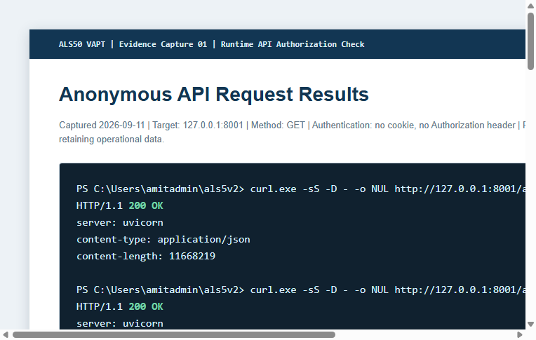

AAerofix Service Management
Confidential - Authorized AssessmentWeb Application Security Assessment & VAPT Report
Evidence-based assessment of the ALS50 service-management portal and locally accessible API.
Assessment date11 September 2026
Assessment typeAuthorized, non-destructive security assessment
EnvironmentLocal runtime API at 127.0.0.1:8001 and deployment configuration source
Prepared byApplication Security Assessment
Document Control
Contents
- Executive Summary
- Scope, Methodology & Limitations
- Architecture & Attack Surface
- Security Test Coverage
- Vulnerability Summary & Detailed Findings
- Positive Controls, Roadmap & Appendix
Assessment boundary: Findings are restricted to evidence actually collected in this assessment. The API was assessed locally; authenticated multi-role test accounts and destructive testing were deliberately out of scope.
1. Executive Summary
ALS50 is a React/FastAPI service-management portal supporting incidents, approvals, component lifecycle, warranty claims, customer queries, users, assignment groups, notifications, configuration, exports, and attachments. The assessment identified a critical server-side access-control weakness: the generic records API returns sensitive business collections without authentication. Controlled requests to the local runtime returned HTTP 200 for both incident and user record listings without a bearer token or session.
Overall risk rating: High. Source evidence shows the same unauthenticated router exposes write, bulk-upsert, full collection replacement, and delete operations. The assessment did not execute a state-changing request. A separate dependency scan also found a critical direct frontend dependency advisory that needs urgent patch validation.
1Critical confirmed
1Critical potential
1Medium confirmed
0High
0Low
Priority Actions
- Add mandatory server-side authentication and resource/action authorization to all generic records routes.
- Patch or replace `jspdf`, then regression-test PDF/export workflows and rerun dependency audit.
- Set baseline browser security headers at the active Caddy/API gateway.
- Add authorization and dependency security checks to CI, followed by authenticated multi-role retesting.
2. Scope, Methodology & Limitations
In Scope
- Repository source at `C:\Users\amitadmin\als5v2`.
- Locally accessible FastAPI service at `http://127.0.0.1:8001/api/v1`.
- Frontend/backend source, manifests, Docker, Caddy, and Nginx configuration.
Methodology
OWASP WSTG concepts, OWASP Top 10 / API Top 10, CWE, and CVSS v3.1 guided the assessment. Tests included targeted route discovery, source review, non-destructive unauthenticated HTTP GET/OPTIONS checks, and `npm audit --omit=dev --json`. Findings were classified only where evidence supported impact.
Limitations
- No production data changes, deletion, uploads, brute-force, denial-of-service, or external network scans were performed.
- No separate administrator, CSM, approver, and ordinary-user test credentials were provided. Full BOLA/IDOR and workflow authorization testing remains required.
- The invalid-login request was not classified because local command quoting caused a malformed JSON request. It is an incomplete test, not a vulnerability.
- `pip-audit` was unavailable in the active virtual environment; no backend dependency conclusion is made.
4. Security Testing Results
| Area | Tested | Result | Finding |
|---|
| Authorization / BOLA | Yes | Unauthenticated API list access confirmed; write/delete source paths have no session dependency. | SEC-001 |
| Authentication / Session | Partial | Source review of hashing, JWT claims, session revocation and selected CSRF protections. | None classified |
| CORS | Yes | Hostile-origin preflight returned 400 without `Access-Control-Allow-Origin`. | None classified |
| Security headers | Yes | Active API response lacked CSP, HSTS, nosniff, frame, referrer and permissions headers. | SEC-003 |
| File security | Source review | Compressed attachments are blocked for knowledge documents; broader upload/download testing was not performed. | None classified |
| Dependencies | Yes | npm production audit: 34 advisories, including 1 critical and 2 high. | SEC-002 |
Runtime Evidence
GET /api/v1/health: 200 OK. GET /api/v1/records/incidents: 200 OK without authentication. GET /api/v1/records/users: 200 OK without authentication. OPTIONS /api/v1/records/incidents with Origin https://evil.example: 400. Observed health headers: server, content-length, content-type. Key security headers observed: none.
5. Vulnerability Summary & Risk Heatmap
| ID | Title | Severity | CVSS | CWE | OWASP | Status |
|---|
| SEC-001 | Unauthenticated generic records API | Critical | 9.8 | CWE-862, CWE-639 | A01:2021; API1:2023 | Confirmed |
| SEC-002 | Critical/high production dependency advisories | Critical | Not assigned | Varies by advisory | A06:2021 | Potential |
| SEC-003 | Missing baseline response security headers | Medium | 5.3 | CWE-693 | A05:2021 | Confirmed |
Likelihood × Impact
Likelihood \ Impact
Low
Medium
High
High
SEC-003
SEC-001; SEC-002*
Medium
Low
*SEC-002 severity reflects package-manager advisory classification. ALS50-specific exploitability requires patch and feature validation.
6. Detailed Findings
SEC-001: Unauthenticated Generic Records API
Critical - ConfirmedCVSS v3.19.8 (AV:N/AC:L/PR:N/UI:N/S:U/C:H/I:H/A:H)
CWECWE-862 Missing Authorization; CWE-639 Authorization Bypass Through User-Controlled Key
OWASPA01:2021 Broken Access Control; API1:2023 Broken Object Level Authorization
Affected component`backend/app/api/v1/records.py`; `/api/v1/records/{resource}`
Description & Evidence
The generic records router has database dependencies but no validated-session or role dependency. Safe runtime requests to incident and user collections returned HTTP 200 without credentials. Source review shows the same router also exposes individual upsert, bulk upsert, replace and delete operations.
Impact
Network users can read sensitive operational and personal data. The unprotected write/delete code creates a realistic risk of unauthorized modification, replacement, or deletion; this assessment did not perform state-changing actions.
Safe Reproduction
- Without cookies or Authorization header, request `GET /api/v1/records/incidents`.
- Observe HTTP 200.
- Repeat for `GET /api/v1/records/users`; observe HTTP 200.
- Review matching POST/PUT/DELETE decorators in `records.py` and confirm no auth dependency is declared.
Recommended Fix
Add a validated-session dependency to the records router. Enforce resource/action-level role, assignment-group, and ownership policy before reading or writing objects. Move workflow transitions to server-side validation and reject unauthorized client-supplied role/status changes. Add anonymous, horizontal, vertical, bulk, replace, and delete regression tests.
Retest
All anonymous calls must return 401/403. Validate administrator, CSM, approver and standard-user object access using separate test accounts and controlled identifier substitution.
6. Detailed Findings (continued)
SEC-002: Critical and High Production Dependency Advisories
Critical - PotentialCVSSNot assigned; advisory-specific scores were not captured
OWASPA06:2021 Vulnerable and Outdated Components
Affected componentFrontend production dependencies
Evidence`npm audit --omit=dev --json`
Evidence
The production audit returned 34 advisories: 1 critical, 2 high, and 31 moderate. `jspdf` is a direct critical dependency; `xlsx` is a direct high dependency; `@tiptap/core` is high and transitive. ALS50 declares and uses PDF/export functionality, so remediation is urgent.
Impact & Fix
Advisory titles include ReDoS, PDF injection, path handling and prototype pollution. No advisory exploit was attempted, so this remains potential until feature-specific validation. In an isolated branch, upgrade or replace affected packages using current advisory guidance, test PDF/export workflows, regenerate the lockfile, and rerun the production audit.
SEC-003: Missing Baseline Security Headers
Medium - ConfirmedCVSS v3.15.3 (AV:N/AC:L/PR:N/UI:R/S:U/C:L/I:L/A:N)
CWE / OWASPCWE-693; A05:2021 Security Misconfiguration
Affected componentActive API port 8001; reviewed Caddyfile
EvidenceRuntime health response and proxy configuration source
Description & Fix
The active API health response lacked CSP, HSTS, X-Content-Type-Options, frame protection, Referrer-Policy and Permissions-Policy. The Caddyfile adds no headers. Configure the active gateway with a restrictive CSP, nosniff, frame protection, Referrer-Policy and Permissions-Policy. Enable HSTS only after the HTTPS hostname is confirmed operational. Add header regression checks.
8. Retesting, Tools & Conclusion
Required Retest Sequence
- Repeat unauthenticated GET/POST/PUT/DELETE/bulk/replace calls for every record resource; all must return 401/403.
- Use role-separated test users to validate ownership, group scope, approvals, workflows and administrative functions.
- Verify Caddy HTTPS responses include expected security headers and secure cookie attributes.
- Rerun `npm audit --omit=dev --json` after dependency remediation and use a backend dependency scanner.
- Conduct controlled attachment upload/download and path traversal tests with harmless fixtures.
Tools Actually Used
| Tool | Purpose | Version | Result |
|---|
| Source inspection | Routes, auth, proxy and dependency configuration | N/A | Confirmed records-router auth gap and configuration observations. |
| curl.exe | Controlled HTTP GET and CORS OPTIONS checks | Not captured | Confirmed anonymous record GET behavior and hostile-origin preflight denial. |
| npm audit | Production frontend dependency scan | Not captured | 34 advisories: 1 critical, 2 high, 31 moderate. |
| pip-audit | Backend dependency scan | Unavailable | Not installed in active virtual environment. |
Conclusion
The assessment identified a confirmed critical access-control weakness that must be remediated before the API can be treated as a protected operational service. Dependency and header hardening should proceed in the same remediation cycle. Untested controls are not assumed secure; an authenticated post-remediation retest is required.
PDF instructions: select “Download / Save as PDF”, then choose “Save as PDF” in the browser print dialog. Use A4 paper and enable background graphics for the cover styling.
9. Evidence Repository
Evidence references below are limited to artifacts captured during the authorized assessment. HTTP response bodies were intentionally discarded, and no customer, employee, token, password, or session data is included in this report.
| Evidence ID | Finding | Type | Date | Description |
|---|
| EVD-001 | SEC-001 | Rendered screenshot | 2026-09-11 | Anonymous localhost GET evidence for incidents and users. Response bodies redacted by discard. |
| EVD-002 | SEC-001 | Source excerpt | 2026-09-11 | Generic records handlers declare a database dependency with no authentication/authorization dependency. |
| EVD-003 | SEC-003 | HTTP headers | 2026-09-11 | Health response status and observed headers; baseline browser-hardening headers absent. |
| EVD-004 | SEC-002 | Dependency scan | 2026-09-11 | `npm audit --omit=dev --json`: 34 production advisories, including 1 critical and 2 high. |
| EVD-005 | None | CORS control check | 2026-09-11 | Hostile-origin preflight returned 400 and no Access-Control-Allow-Origin header. |
EVD-001 - Runtime Authorization Capture

Figure 1. EVD-001. Browser-rendered evidence capture. Response bodies are deliberately absent. The source artifact retains the full request/status metadata without exposing operational data.
Evidence source: `docs/assets/vapt/evidence-captures.html`. Screenshot artifact: `docs/assets/vapt/evidence-captures-overview.png`. The screenshot was rendered from the capture source after the controlled test.
11. Assessment Governance and Sign-Off
Rules of Engagement
Version History
| Version | Date | Change |
|---|
| 1.0 | 2026-09-11 | Initial evidence-based VAPT assessment. |
| 1.1 | 2026-09-16 | Expanded evidence repository, rendered evidence screenshot and coverage matrices. |
Management Sign-Off
| Role | Name | Signature | Date |
|---|
| Assessment Team | ________________________ | ________________________ | ____________ |
| Application Owner | ________________________ | ________________________ | ____________ |
| Security Reviewer | ________________________ | ________________________ | ____________ |
| Management Approval | ________________________ | ________________________ | ____________ |
Assessment conclusion: This report presents evidence from a constrained, authorized test. It should be followed by remediation of SEC-001 and an authenticated, role-separated retest before a release or security attestation decision.